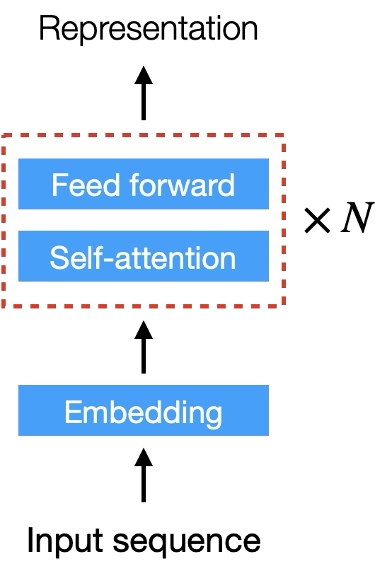
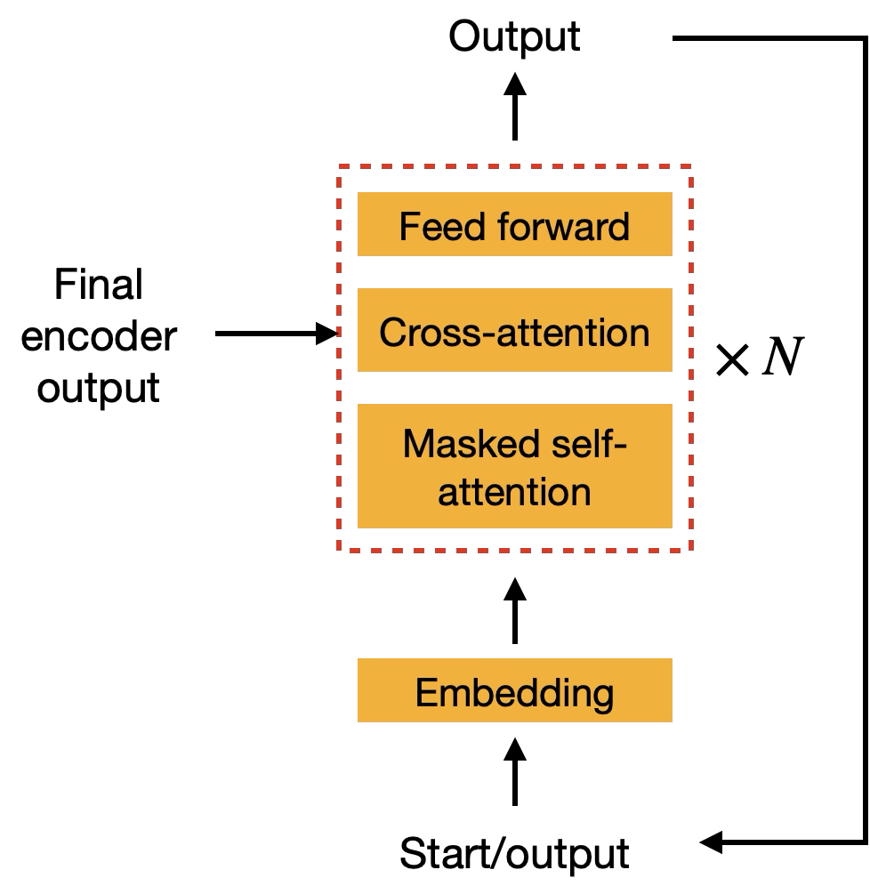
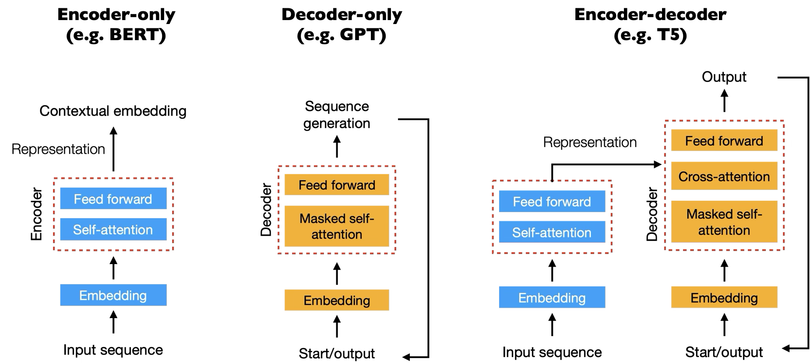

Slot 84 transformer · Transformer Architecture · Tasks · Pre-training (08-1 cells 2–4) · mock
The encoder is widget 83's own model (the arc's tiny BERT: D 48, four heads of 12, two post-LN blocks,
masked-token pretraining on the synthetic clinical notes), now read through both blocks, the Add & Norms and the
feed-forward. The decoder is a causal model of the same size trained on the same notes by next-token
prediction; cross-attention is a tiny encoder–decoder trained on DNA → protein, 08-1 cell 4's own
biological example. Every number is from transformer-mock-data.json
(transformer-measure.py --export). Filled states so they can be judged; the widget opens empty.
On-canvas strings are candidates, not copy.
0 · What the measurement found
1 · The pages
08-1 has three headings: Transformer Architecture (§1 Encoder Block, §2 Decoder Block), Transformer Tasks (the three families, a table) and Pre-training (the three objectives, a table). The arc plan picked A and folded the families into the Decoder page as a mask switch. B gives the families their own page, the lesson's four headings in order.
| pages | what it costs | |
|---|---|---|
| A the arc's pick | Encoder · Decoder · Pre-training | Tasks is a control on Decoder: Encoder-only · Decoder-only · Encoder–decoder changes the diagram and the masks |
| B the lesson's headings | Encoder · Decoder · Tasks · Pre-training | four pages; Tasks is the families side by side (§ 4 A), the Decoder page only its own block |
| C fewer | Architecture · Pre-training | Encoder / Decoder a control on one page; the families on Architecture; the Decoder's two attentions share a page with the encoder's |
2 · Page Encoder — one token through the block
The claim the page carries: a token's vector is not fixed once embedded. discharge in planned discharge home today and in yellow discharge from wound is one row of the token table (and the same position, 2), so the two x̃ rows are identical (cos 1.000). After block 1's attention 0.880, after block 2's 0.425; over 600 notes a linear probe tells the senses apart 47% at x̃ and 100% after the first attention (E1). A: his encoder figure, stage by stage bottom to top, the two discharge rows beside each stage and how alike they are. B: the whole sentence as an [L × 48] matrix at every stage, the block keeping its shape, the FFN drawn as the same network on each row.

A: it carries the misconception, on his figure. B's matrix can be A's hover (a stage shows the whole sentence), and the [L × 48] shape goes on each box as a label.
3 · Page Decoder — masked self-attention, generation, cross-attention
His decoder figure has three sublayers and a loop from the output back to the input. A, section 1: the causal model's weights on the lesson's sentence, every key after the query set to −∞ before the softmax (the band); section 2: generation fed back, a Step computing the next token's probabilities from the tokens so far and appending the largest. Changing tokens 5 onward leaves rows 0–4 exactly unchanged (D1). B: cross-attention on DNA → protein, each amino acid a query and the encoder's nucleotides the keys: 0.95 of each row lands on its own codon (D2). The English → Malay stage was measured too and translates 100%, but its weights spread (0.36–0.44 on the aligned word), so it is not drawn.


Both, as the page's sections in his figure's order: 1 Masked self-attention, 2 Cross-attention, with generation as the Step on section 1. DNA → protein for cross-attention: it is cell 4's own encoder–decoder example, and the only stage whose weights show where the decoder reads.
4 · Transformer Tasks — the three families
08-1 cell 3's table: encoder-only (BERT), decoder-only (GPT), encoder–decoder (T5, BART). What differs between them is which blocks exist and which keys a query may see, so the three masks are the table. A: the three side by side with the lesson's model and task examples (a page, pick B in § 1; or the control on Decoder, pick A).

5 · Page Pre-training — each objective reads its own direction
08-1 cell 4's own two examples, each objective on the model it trains. A: the two predictions as bars. MLM, treated with [MASK] for chest pain: 0.61 aspirin, 0.39 nitrate, the two chest-pain drugs. Causal, treated with → next: 0.08–0.15 over all ten drugs, because the symptom that sets the drug is to its right. Then the lesson's decoder example, treated with aspirin for → chest 0.998. B: the same along the whole clause, 600 clauses: which tokens each objective recovers (P1).
A with B beneath it as the page's second section: A is the lesson's example, B shows the drug is the only token where the two part. The third objective, sequence-to-sequence, is the Decoder page's cross-attention model; this page names it and links no figure of its own.
6 · The calls
1 · Pages. A Encoder · Decoder · Pre-training, the families a control on Decoder (the arc's pick) · B Encoder · Decoder · Tasks · Pre-training, the lesson's headings (recommended: cell 3 is its own heading and its own table, and a control that redraws the Decoder page as an encoder hides that the encoder page already is one) · C Architecture · Pre-training.
2 · Encoder. A his block, a Step a stage, the two discharge rows and how alike they are (recommended) · B the whole [L × 48] matrix at each stage.
3 · Decoder. A both sections, masked self-attention with generation, then cross-attention (recommended) · B masked self-attention and generation only, cross-attention on Tasks · and the cross-attention stage: DNA → protein (recommended) or English → Malay (his figure's direction, diffuse weights).
4 · Generation. Greedy from treated with aspirin for gives chest pain, then repeats . patient deteriorated overnight until the length runs out. A stop at [SEP] or the first “.” (recommended: the lesson's example ends at the clause) · B greedy as it is, the loop shown · C sampled with a Seed control, which gives varied notes (299 of 300 grammatical).
5 · Pre-training. A the two predictions, with the clause's token-by-token rows beneath (recommended) · B the predictions only.
6 · Title and slug. Deep Learning - Language: Transformer (recommended; 83's
form) · Deep Learning - Language: Transformers · slug transformer.
For the lesson, 08-1 cell 2. "The FFN provides the nonlinearity needed to capture complex patterns such as negation" did not hold here: a model with no FFN at all reads negation 100% after its first attention sublayer and loses under one point of masked-word accuracy (E3). Softmax and LayerNorm are nonlinear too. And "lower layers capture local patterns … higher layers semantic meaning" does not show in two blocks (E4). Both are claims about large models; the widget draws neither and says nothing about what the FFN does.
Left to the draft, conventional: the base model's full weights and the causal model's as
generated files (83's weights.js carries block 1 only), a JS forward held to torch within 1e-5 as
83's is; the DNA → protein model as a third generated file; the two senses in --c-group-a /
--c-group-b, signed rows on --c-value-low / --c-value-high, weights on
--c-magnitude, the masked band as 83's [PAD] band.